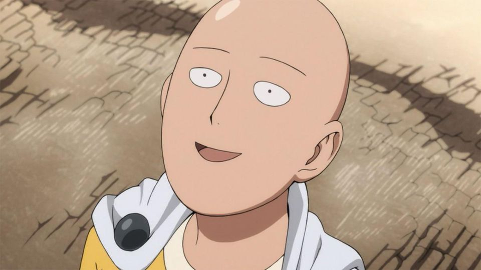

李诞写的一本书《笑场》的序言里有一句话：“人生确实没有意义，但人生有美”。
其实我早就“毕业”了，只是现在才领证书。当我没有挂科记录的时候，当我开始实习的时候，我的学生时代就已经结束了，虽然好像不曾开始过。学业上，可能唯一的遗憾是英语四级（CET 4）没过。也许你会觉得可笑，我也感觉可笑。临近毕业，学校有一个大学四年的综测成绩，我期末考试从没考过第一，但四年下来的综测竟然可以在班里排第一。当然，我们班成绩整体很差，但这不重要，重要的是将近1/2的人可以考过425，我却只有423。
大学刚入学的几天，我曾在笔记本上写过几天日记，整理东西的时候翻开，其中有一句话让我感到吃惊：“我是来学习的，不是来娱乐的”。我自然可以理解当时是什么心情，高三的一年时间里，只有我自己知道我做了什么。高三开学摸底考，我考班里倒数十几，直到后来各种模拟考高考，我可以保持班里前三。不要对这样的排名感到诧异，这就是小县城的真实情况。也正因为这样的经历，我怀着不那么正规的求学的心，开始了大学生活。
就在前段时间，我陷入了同样的思维困境：“我不是来娱乐的，我是来工作的”。因为没有带着游玩的心上大学，所以大学的时光里，我的成绩可能不那么差，技术能力也有所增长，总体而言，是远超部分同学的。但也正因如此，我错过了很多娱乐的机会，甚至我大学所在的城市，都完全不了解，景点、场所等。更重要的是，我错过了非常重要的人，错过了曾经弥足珍贵的机会。现在我已经学会如何爱一个人，可是没有人再需要我去爱了。
所以你可以理解标题“相同的错误”是指什么。我从半个月前开始规划要写的内容，原标题是“关于职业生涯的规划”，后来觉得职业生涯这个范围太小了，无非是认真工作、好好生活、工作和生活平衡。事实上生活本就不需要规划，规划了也没用，我们应该时刻保持清醒，现状如何，未来会怎样，想要的是什么。总的来说，该有的想法是：“我不是来混日子的”。
我换了个头像。他说，“我变秃了，也变强了”。琦玉因为感兴趣而当英雄，不是为了被更多人认识和崇拜，也不是为了英雄协会的丰厚待遇，仅仅是因为想当英雄所以当了英雄。可以说，我从事某个职业，也不是为了别人眼中的各种评价标准，仅仅是因为我从初中就开始积累的某些兴趣，让我想要在这条路上继续探索前行。
琦玉的强大是莫名其妙的，即使他把变强的过程全盘托出，你也无法达到他的高度。就好比学霸告诉你他上课如何听讲，作业如何完成，你也无法成为下一个学霸。一拳超人变强大唯一的代价，就是头发变秃了，直接变成了光头。我发现这一点和程序员类似，如果一个程序员因为工作把头发搞秃了，那他往往是大牛，并且即使他把方法告诉你，你也无法轻易超越。不过即便如此，也并不应该阻碍我们对强大能力的向往。

我的毕设以微服务为标题，但由于我们学校对毕设和论文的要求之低，我并没能完成自己心里的目标，只是应付老师，蒙混过关了。微服务本身是一个很简单的概念，难点往往在于如何在大型系统中实现微服务。在大型系统中进行任何操作都步履维艰，微服务并不特殊，因此，微服务是简单的。关于注册中心、配置中心、负载均衡、断路器什么的，可能在不久的将来，这个博客上就会出现关于它们的文章。
学习应该关注本质，是抽象的，我更希望从高的层面去理解技术，如果只是学习Kafka怎么使用而不关心像Kafka这样的中间件都在解决什么问题，这个世界就太无聊了。结合实际工作的内容，我的下一步计划会聚焦在中间件、区块链和算法上。
（写到这里，发现自己没有耐心继续写下去。有些内容的输出需要同理心，也就是“当时是什么想的”。这半个月来发生了很多事情，但是现在已经结束了，并且我将面临新的生活和挑战。我的心态回不到过去，也不愿停留在过去。可能剩下的内容将无法完成。）
（这个附件 关于职业生涯的规划 是之前写的大纲。）